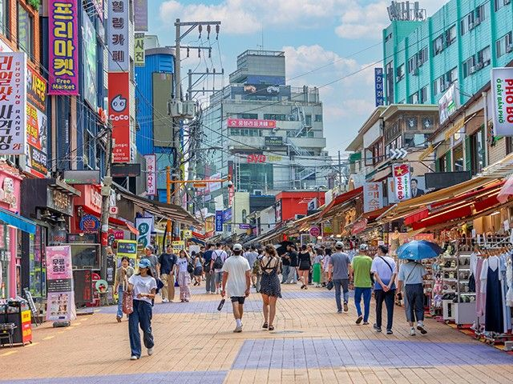
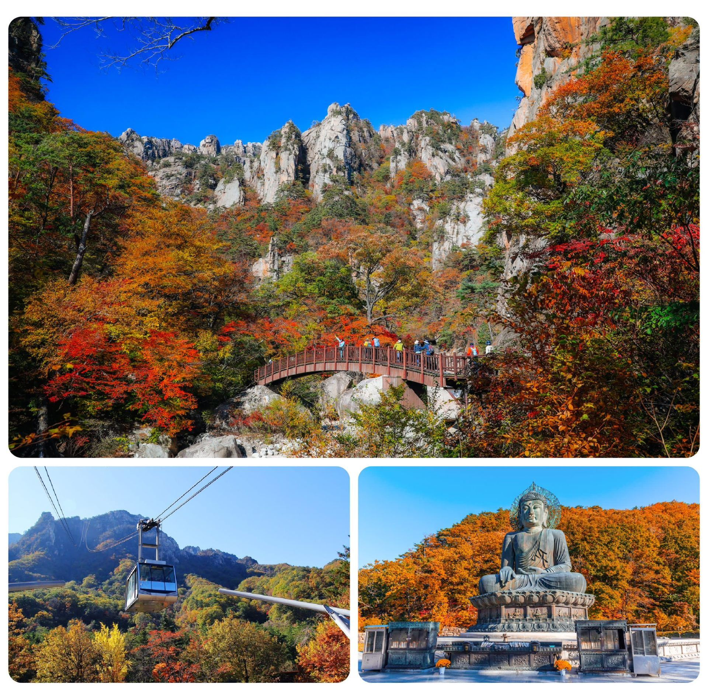
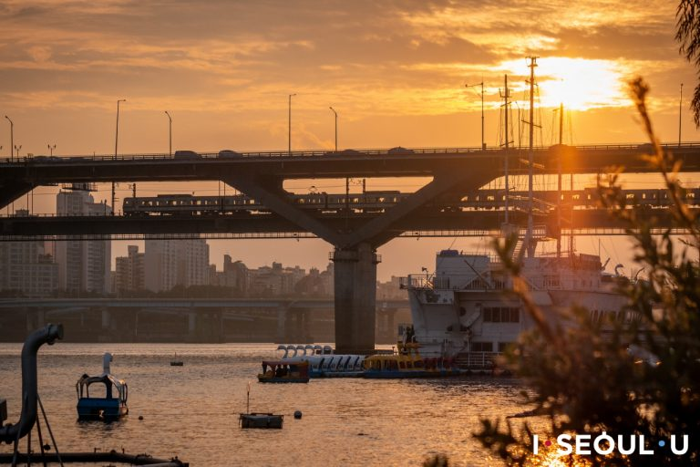
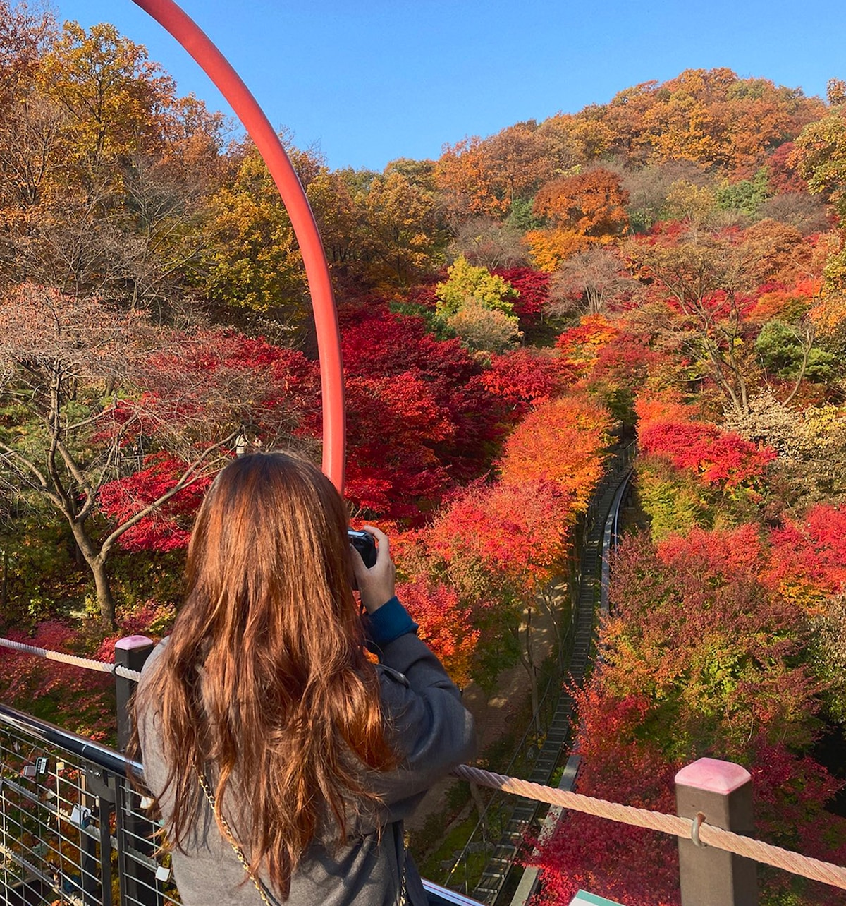
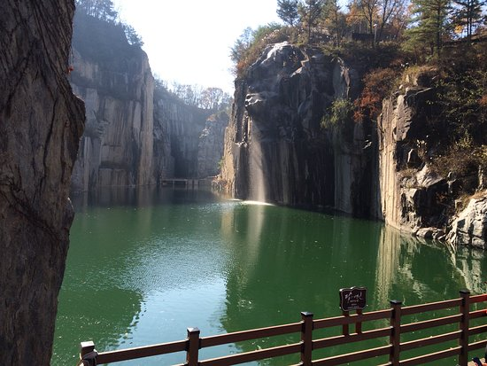
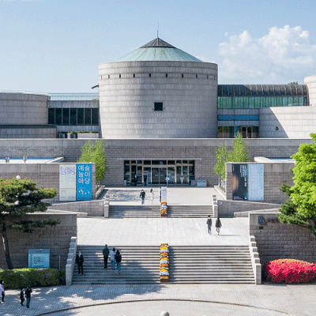
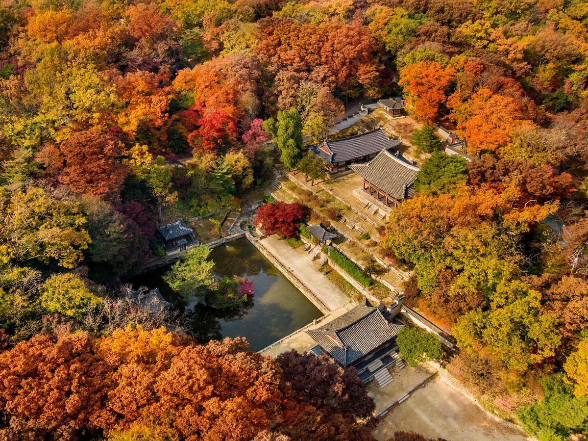
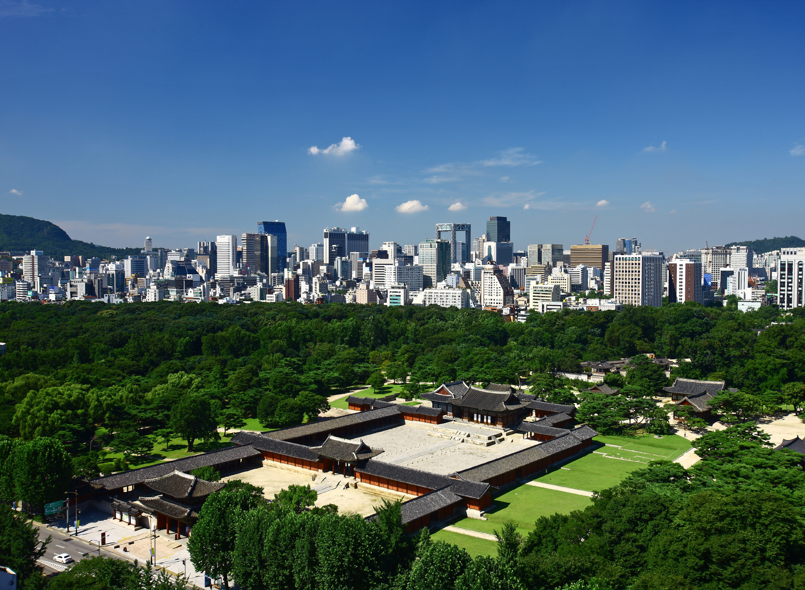

17–18 октября
Шанхай
Начинаем легко: Бунд, водный город Чжуцзяцзяо и зелёные улицы Французской концессии.
Бунд вечеромЧжуцзяцзяоКрасивый ужин2 ночи
Фото: Declan Sun / UnsplashШанхай с подругами, горы и старые города Китая вдвоём, затем Сеул, музеи и осенние прогулки. 16 октября — 7 ноября 2026.
Восемь дней без спортивного похода: города, вечерние огни и живописные горные прогулки налегке.
Начинаем легко: Бунд, водный город Чжуцзяцзяо и зелёные улицы Французской концессии.


Приезжаем к главному моменту — когда дома на скалах и мосты загораются вечерними огнями.

Две ночи над облаками, рассвет, сосны и основные обзорные площадки. Канатные дороги берут на себя тяжёлый набор высоты.
Точные номера поездов подтвердим после открытия продаж; сейчас фиксируем удобный ритм дня.
Без спортивного хайкинга: гуляем, фотографируем, смотрим вечерние огни и едем в горы налегке.
Заселяемся, выдыхаем после перелёта и встречаемся с городом у реки.
Каналы и мосты утром, зелёные улицы и красивый ужин вечером.
Оставляем основные чемоданы в Шанхае и едем налегке через Шанжао к вечерней подсветке долины.
Спокойное утро в долине, затем поезд и подъём к Жёлтым горам.
Рассвет, канатные дороги и прогулка между главными обзорными площадками.
Возвращаемся прямым поездом и забираем оставленные в Шанхае чемоданы.
Пятница полностью свободна. В субботу подруги летят в Пусан, вы — в Чаншу.
Четыре очень разные остановки — от небоскрёбов до пиков над облаками.

Бунд, уютные улицы бывшей Французской концессии и водный город Чжуцзяцзяо. Для одной из подруг это первое знакомство с мегаполисом.
Фото: Declan Sun / Unsplash
Основные чемоданы остаются в отеле или сервисе хранения с 19 по 22 октября, а в горы берём только необходимое.
Фото: UnsplashДома на скалах, мосты, водопады и главное шоу — вечерняя подсветка. Поэтому ночуем прямо в долине, а не спешим обратно.
Фото: QunarГранитные пики, сосны и море облаков. Это живописная прогулка по оборудованным тропам с канатками — не спортивный поход.
Фото: HolaflyСемь дней по Хунани: старый город, храмы, два горных массива и один настоящий пеший день.

Вы прилетаете первой. На следующий день — Академия Юэлу, храм Кайфу и спокойная встреча мужа после долгого перелёта.

Вечером любуемся фонарями и отражениями в Тоцзян, а утром успеваем увидеть старый город до основных групп.

Первый день — обзорные площадки Юаньцзяцзе и Тяньцзышань. Второй — отдельный маршрут вдоль Golden Whip Stream.

Канатная дорога, тропы над обрывом, храм и Небесные врата. Вечером — поезд в Чаншу, поэтому берём ранний слот.
Тот же формат: понятная последовательность, где жить и какой транспорт закладывать.
Здесь уже больше природы, храмов и движения. Но после международного перелёта мужа оставляем вечер без гонки.
Вы прилетаете первой и спокойно устраиваетесь в городе.
Академия Юэлу, храм Кайфу и встреча мужа в аэропорту после 17:25.
Скоростной поезд, прогулка вдоль Тоцзян и вечерние огни старого города.
Утро в старом городе, затем поезд и переезд к East Gate.
Юаньцзяцзе, лифт Bailong, Hallelujah Mountain и Тяньцзышань.
Главный пеший день: лес, река, скалы и маршрут, который можно сократить по погоде.
Небесные врата и храм, вечерний поезд и утром прямой рейс CZ3065.
Эта часть целиком про Хунань: древний город, храмы и два разных горных массива.
Не просто пересадка: тысячелетняя Академия Юэлу, храм Кайфу и остров Цзюйцзы. Хорошая мягкая разминка перед природной частью.
Фото: Our China StoryДома на сваях, мосты и отражения фонарей в реке Тоцзян. Одна ночёвка нужна именно ради вечера и тихого утра.
Фото: Trip.com
Тысячи кварцитовых столбов, обзорные площадки над облаками и два полных дня, чтобы не превращать парк в забег.
Фото: Jakub Tomasik / Unsplash
Длинная канатная дорога, тропы вдоль обрыва, 999 ступеней и храм на вершине. Отдельный парк и отдельный билет.
Фото: Sergio Kian / UnsplashПодтверждённые детали из маршрутных квитанций и ваучеров. Всё время указано местное.
China Eastern Airlines · MU260 · прямой рейс
China Southern Airlines · CZ5828 · прямой рейс
Рекомендуемое время прибытия в аэропорт — не позднее 09:15.
China Southern Airlines · CZ3065 · прямой рейс
China Eastern Airlines · MU5052 и MU259
Пересадка в Шанхае — 3 ч 45 мин.
Inside the Visitor Service Center, County Road 636, Wangxian Gorge Town, Guangxin District, Shangrao, Jiangxi
Включены завтрак для троих и 3 входных билета в Wangxian Valley Scenic Area. Телефон: +86 793 606 0000.
No. 1 House, 4th Row, Huiyun Trade City, Zhaixi, Tangkou Town, Huangshan District, Huangshan
Питание не включено. Бесплатная отмена до 18:00 20 октября по местному времени. Телефоны: +86 181 0559 7263, +86 138 5591 8650.
At the foot of Danxia Peak, Xihai Scenic Area, Huangshan District, Huangshan
Завтрак для троих включён. Телефоны: +86 559 259 0999, +86 559 558 8555.
Коды бронирования, PIN, номера билетов и документов намеренно не опубликованы — они остаются в оригинальных PDF.
Осенние прогулки, музеи, Сораксан и море. Все восемь дней из исходного плана.

Аэропорт → отель → Hongdae
Аэропорт → отель → Hongdae
CZ3065: CSX T2 → ICN T1, прилёт 12:35. После прилёта — паспортный контроль, багаж, дорога и заселение. Ориентир 19:30–21:30: ужин и короткий Halloween-вечер в одном заведении с подтверждённой афишей. Возвращение около 22:00: завтра ранний выезд в Сокчо. Lotte World убран.
Конкретная вечеринка на 31 октября 2026 пока не подтверждена. Не планировать клуб до утра перед Сораксаном. Если после прилёта поздно или хочется полноценной ночной вечеринки, заменить поездку 1 ноября на более близкий Сувон.
홍대 · Район · Сеул · Хондэ
Вечер после прилёта 31 октября: ужин и одно заведение с тематической программой по подтверждённой афише. Район — предложение, не конкретный забронированный фестиваль. Найденные афиши вечеринок 2025 года не приняты за события 2026. Не ездить между несколькими районами за один вечер.
Адрес / ориентир · EN: Hongik University Station
Адрес / ориентир · KO: 서울특별시 마포구 홍대입구역
Статус в исходном плане: Добавлено в обновлённый план

Сеул → Seoraksan → Sokcho Beach → Сеул
Сеул → Seoraksan → Sokcho Beach → Сеул
06:00–06:30 — выезд из отеля; ориентир автобус из Сеула около 07:00. 10:30–11:00 — прибытие к Sogongwon с последним участком на такси. 11:00–14:00 — Sinheungsa и тропа к Biseondae туда-обратно ИЛИ канатная дорога с короткой прогулкой. 14:00–15:00 — обед и переезд к морю. 15:00–16:00 — Sokcho Beach, если хватает времени. Ориентир обратного автобуса 17:00–18:00; возвращение в отель примерно 21:00–23:00.
Лучше один организованный однодневный тур с подходящими точками либо автобус с заранее купленным обратным билетом и такси к парку. Тур может иметь другой порядок и не включать море — проверить до оплаты. Не пытаться совместить Biseondae, Ulsanbawi и канатную дорогу. В сильный дождь, туман или при закрытии троп заменить день на Сувон.
설악산 / 울산바위 · Природа · Сокчо
На исходном скриншоте Ulsanbawi. На 1 ноября предложен другой, более короткий маршрут: Sogongwon → Sinheungsa → Biseondae и обратно, около 6 км суммарно, с запасом 2,5–3 часа. До Biseondae от Sogongwon — около 3 км по Корейской туристической организации. Не идти дальше к пещере/вершинам. Альтернатива — канатная дорога вместо длинной прогулки, если она работает и нет большой очереди. Ulsanbawi оставлен для отдельного похода с ночёвкой; в основной день не включён.
Адрес / ориентир · EN: Seoraksan Sogongwon, Sokcho
Адрес / ориентир · KO: 강원특별자치도 속초시 설악산 소공원
Статус в исходном плане: Из скриншота
속초 · Город · Сокчо
Город на восточном побережье и база для Сораксана. Подпись «2,5 часа» не учитывает дорогу до автовокзала, ожидание и пробки; планировать примерно 3–4,5 часа от отеля.
Адрес / ориентир · EN: Sokcho
Адрес / ориентир · KO: 강원특별자치도 속초시
Статус в исходном плане: Из скриншота
속초해수욕장 · Природа · Сокчо
Короткая прогулка у моря после Сораксана 1 ноября. Не добавляем большой городской маршрут или колесо обозрения: нужно сохранить запас на автобус обратно. При долгой дороге/очередях в парке море сокращается первым.
Адрес / ориентир · EN: Sokcho Beach, Sokcho
Адрес / ориентир · KO: 강원특별자치도 속초시 속초해수욕장
Статус в исходном плане: Добавлено к однодневной поездке

Yongmasan → Сонсу → Ttukseom Hangang Park
Yongmasan → Сонсу → Ttukseom Hangang Park
10:00–12:30 — Yongmasan Skywalk и возвращение, если восстановились после дальней поездки. 13:15–14:00 — обед в Сонсу. 14:00–15:30 — максимум 1–2 магазина. 16:00–17:30 — обязательная прогулка в Ttukseom Hangang Park.
После длинного дня в Сокчо Ttukseom сохраняем, шопинг сокращаем. Если не восстановились, начать с Сонсу и реки, а Skywalk сделать вместо части дворцового дня или другого выезда. Pink muhly ищем в Jamwon: наличие такой травы в Ttukseom не утверждается.
용마산 스카이워크 · Природа · Сеул · Чуннан
Деревянная обзорная дорожка около 160 м, до 10 м над землёй. Официальный городской путеводитель: доступ круглосуточный. Подход от Sagajeong, выход 4, около 2,4 км; это прогулка с подъёмом, а не выход из метро прямо к мосту. Заложить 2,5–3 часа на весь визит.
Адрес / ориентир · EN: Yongmasan Skywalk Observatory, Myeonmok-dong, Jungnang-gu
Адрес / ориентир · KO: 서울특별시 중랑구 면목동 용마산 스카이워크 전망대
Статус в исходном плане: Добавлено по вашему запросу
앵글런 · Шопинг · Сеул · Сонсу
Корейский бренд одежды oversize. Адрес шоурума совпадает с подписью на скриншоте.
Адрес / ориентир · EN: B1, 8 Wangsimni-ro 14-gil, Seongdong-gu
Адрес / ориентир · KO: 서울특별시 성동구 왕십리로14길 8, 지하 1층
Статус в исходном плане: Адрес проверен
오소이 · Шопинг · Сеул · Сонсу
Магазин сумок; адрес подписи совпадает с официальным списком магазинов.
Адрес / ориентир · EN: 7 Seongsuil-ro 6-gil, Seongdong-gu
Адрес / ориентир · KO: 서울특별시 성동구 성수일로6길 7
Статус в исходном плане: Адрес проверен
카시나 · Шопинг · Сеул · Сонсу
Название читается в субтитрах. Конкретный филиал кадром не подтверждён; для маршрута предложен Seongsu как кандидат. Проверить фото фасада в карточке перед поездкой.
Статус в исходном плане: Филиал не подтверждён
Адрес / ориентир · EN: KASINA · точный адрес не установлен
Название для поиска · KO: 카시나 성수
디스이즈네버댓 · Шопинг · Сеул · Сонсу
Бренд определён. Для прогулки выбран Seongsu Flagship, который есть в официальном каталоге; соответствие именно этому кадру не доказано.
Статус в исходном плане: Филиал — кандидат
Адрес / ориентир · EN: thisisneverthat · точный адрес не установлен
Название для поиска · KO: 디스이즈네버댓 성수
스탠드오일 · Шопинг · Сеул · Сонсу
Магазин сумок. Адрес магазина на кадре не указан; искать именно Seongsu Flagship. Юридический адрес в подвале сайта не принят за адрес витрины.
Статус в исходном плане: Из скриншота
Адрес / ориентир · EN: STAND OIL · точный адрес не установлен
Название для поиска · KO: 스탠드오일 성수
룡룡버거하우스 · Еда · Сеул · Сонсу
На скрине: mala chicken cheeseburger, 10:30–22:00, последний заказ 21:30. Пост 26.08.2025: меню и часы могут измениться.
Адрес / ориентир · EN: 90 Seongsui-ro, Seongdong-gu
Адрес / ориентир · KO: 서울특별시 성동구 성수이로 90
Статус в исходном плане: Из скриншота
뚝섬한강공원 · Парк · Сеул · Кванчжин
Обязательная прогулка вдоль Хангана в день Сонсу. Ближайшее метро — Jayang / 자양, линия 7 (бывшее Ttukseom Resort): не путать со станцией Ttukseom на линии 2. От магазинов Сонсу отдельный переезд/прогулка. Это парк у реки, не Seoul Forest. Прогулка 1–1,5 часа; фонтаны и сезонные активности не обещаны.
Адрес / ориентир · EN: 139 Gangbyeonbuk-ro, Gwangjin-gu, Seoul
Адрес / ориентир · KO: 서울특별시 광진구 강변북로 139
Источник корейского адресаСтатус в исходном плане: Добавлено в обновлённый план

Сеул → Hwadam Forest → Сеул
Сеул → Hwadam Forest → Сеул
08:30–09:00 — выезд. Выбрать вход примерно на 11:00, если есть билет. 11:00–14:30 — прогулка по саду, монорельс только при отдельной брони. 14:30–15:30 — обед/кофе, затем возвращение.
Бронь определяет день и время: если на 3 ноября нет билетов, выбрать другую доступную дату и перестроить выезды. Pocheon Art Valley 3 ноября закрыт по туристическому справочнику, поэтому простая перестановка с ним не подходит. Пик цвета листвы не гарантируется.
화담숲 · Природа · Кванджу · Кёнгидо
Принято как место, указанное вами «Hwadan Forest». Лесной сад у Konjiam Resort, не город Кванджу на юге страны. Официальная осенняя продажа: 23.10–15.11.2026, через NOL. На 4 ноября требуется билет на конкретное время; наличие не проверено. Монорельс бронируется отдельно.
Адрес / ориентир · EN: 278-1 Docheogwit-ro, Docheok-myeon, Gwangju-si, Gyeonggi-do
Адрес / ориентир · KO: 경기도 광주시 도척면 도척윗로 278-1
Источник корейского адресаСтатус в исходном плане: Добавлено по вашему запросу

Сеул → Пхочхон → Сеул
Сеул → Пхочхон → Сеул
09:00 — выезд. 11:00–14:00 — Art Valley и обед, монорельс по желанию. 14:00–15:00 — спокойная прогулка/кофе. 15:30–16:00 — обратно в Сеул.
По карточке Корейской туристической организации первый вторник месяца — выходной: поэтому 3 ноября сюда не едем. Выбран 4 ноября. Актуальные часы и работу монорельса проверить перед поездкой.
포천아트밸리 · Природа · Пхочхон
Правильное написание Pocheon, в запросе Porcheon. Бывший карьер с озером Cheonjuho, скульптурами и монорельсом. Выделен отдельный день; ноябрьские часы, билеты и монорельс нужно проверить. Не совмещён с Hwadam: разные стороны от Сеула. По Корейской туристической организации первый вторник месяца — выходной. Поставлен на среду 4 ноября.
Адрес / ориентир · EN: 234 Artvalley-ro, Sinbuk-myeon, Pocheon-si
Адрес / ориентир · KO: 경기도 포천시 신북면 아트밸리로 234
Статус в исходном плане: Добавлено по вашему запросу

Audeum → MMCA Gwacheon → Jamwon Grass Garden
Audeum → MMCA Gwacheon → Jamwon Grass Garden
09:00 — выезд. Предпочтительно Audeum 10:00–11:30 по реальной брони. 11:30–13:00 — дорога и обед. 13:00–15:00 — MMCA Gwacheon. 16:00–17:00 — Jamwon Grass Garden при подходящей погоде и подтверждённом состоянии травы.
При позднем слоте Audeum поставить MMCA утром; Jamwon перенести на другое свободное светлое окно, а не ехать к розовой траве после темноты. Визит в сад условный: сезон подходит ориентировочно, текущий цвет ещё не подтверждён.
오디움 · Музей · Сеул · Сочхо
Принято как «Audium» из запроса. Поставлен в основной план на четверг 5 ноября. По актуальной карточке NOL работает чт–сб 10:00–17:00, только по предварительной записи; посещение около 90 минут. Слот 14:30 — предложение, не подтверждённая бронь. Официальный сайт недоступен для проверки; точные условия и язык экскурсии подтвердить при бронировании.
Адрес / ориентир · EN: 6 Heolleung-ro 8-gil, Seocho-gu, Seoul
Адрес / ориентир · KO: 서울특별시 서초구 헌릉로8길 6
Статус в исходном плане: Режим по NOL · бронь не подтверждена
국립현대미술관 과천관 · Музей · Квачхон
На скрине: «Imaginations in Light», до 31.10.2027, вт–вс 10:00–18:00, 3 000 ₩, шаттл от Seoul Grand Park, выход 2. Даты выставки, тариф и шаттл повторно не подтверждены; часы согласуются с информацией MMCA. Не путать с филиалом Seoul.
Адрес / ориентир · EN: 313 Gwangmyeong-ro, Gwacheon
Адрес / ориентир · KO: 경기도 과천시 광명로 313
Источник корейского адресаСтатус в исходном плане: Из скриншота
잠원한강공원 · 그라스정원 · Парк · Сеул · Сочхо
Основной кандидат на розовую траву / pink muhly. Официальный сайт города описывает Grass Garden около открытого бассейна: pink muhly и другие декоративные злаки, осенний вид до середины ноября. Это общая сезонность, не подтверждение состояния посадок 5 ноября 2026. В начале ноября цвет может быть бледнее; перед визитом проверить свежие фото или спросить парк. Вход через Sinjamwon underpass от Jamwon, выход 4.
Адрес / ориентир · EN: Jamwon Hangang Park Grass Garden, Seoul
Адрес / ориентир · KO: 서울특별시 잠원한강공원 그라스정원
Статус в исходном плане: Добавлено в обновлённый план

Changdeokgung → Changgyeonggung → Namsan
Changdeokgung → Changgyeonggung → Namsan
09:00–11:30 — Changdeokgung и Huwon, если удалось забронировать утренний сеанс. 11:30–12:30 — Changgyeonggung. 12:30–14:00 — обед и переезд. 14:30–17:30 — Намсан: Hoehyeon → Baekbeom Square → площадка у N Seoul Tower → спуск. Затем ужин, сборы и сон.
Если сеанс сада дольше или ноги устали — сократить Changgyeonggung либо выбрать на Намсане часть кольцевой дорожки вместо вершины. Кёнбоккун не включён без подходящего шоу. MMCA Seoul, Ikseon-dong и Fujifilm перемещены в резерв — не добавлять их поверх этого дня.
창덕궁 · 후원 · Дворец · Сеул · центр
Основной дворец вместо повторного Gyeongbokgung. Ноябрьский режим по Корейской туристической организации: 09:00–17:30, последний вход 16:30, пн закрыт. Для Huwon / Secret Garden нужен отдельный билет и сеанс. Время в плане — предложение; доступность не проверена. Если нет билетов в сад, посмотреть дворцовые корпуса без него.
Адрес / ориентир · EN: 99 Yulgok-ro, Jongno-gu, Seoul
Адрес / ориентир · KO: 서울특별시 종로구 율곡로 99
Источник корейского адресаСтатус в исходном плане: Добавлено в обновлённый план
창경궁 · Дворец · Сеул · центр
Второй дворец рядом с Changdeokgung: пруд Chundangji, павильоны и Большая оранжерея. По Корейской туристической организации 09:00–21:00, последний вход 20:00; обычно пн закрыт. Доступ отдельных зон и оранжереи уточнить. Ночной визит возможен вместо дневного, но не добавлен перед ранним вылетом.
Адрес / ориентир · EN: 185 Changgyeonggung-ro, Jongno-gu, Seoul
Адрес / ориентир · KO: 서울특별시 종로구 창경궁로 185
Источник корейского адресаСтатус в исходном плане: Добавлено в обновлённый план
남산 · Природа · Сеул · центр
Пеший маршрут от Hoehyeon через Baekbeom Square Park к площадке у N Seoul Tower. Заложить 2,5–3 часа на подъём, остановки и спуск. Башня внутри и канатная дорога не обязательны; это прогулка по горе. Если после дворцов устали — выбрать короткую северную кольцевую дорожку вместо вершины.
Адрес / ориентир · EN: Baekbeom Square Park, Namsan, Seoul
Адрес / ориентир · KO: 서울특별시 남산 백범광장공원
Статус в исходном плане: Добавлено в обновлённый план
명동 · Еда · Сеул · центр
Название в кадре отсутствует. На скрине: 11:30–02:00 и 34 700–42 700 ₩, но это не подтверждённые текущие цены. По адресу 2-го этажа найден Mongvely; совпадение вероятное, не окончательное. В том же здании есть другие BBQ.
Адрес / ориентир · EN: 44 Myeongdong 3-gil, 2F
Адрес / ориентир · KO: 서울특별시 중구 명동3길 44, 2층
Источник корейского адресаСтатус в исходном плане: Вероятное совпадение

Отель → аэропорт
Отель → аэропорт
Только выезд из отеля и перелёт. Никаких посещений или музеев в этот день. Рейс MU5052: ICN T1 → PVG T1, вылет 08:55. Далее MU259: PVG T1 → LED T1, вылет 13:45, прилёт 19:05.
Бронь квартиры действует до 8 ноября, 11:00; фактический отъезд — утром 7 ноября.
25 мест и брендов вне основного маршрута: описания, адреса, ссылки и исходные скриншоты.
| Место | Тип и район | Описание | Адрес и ссылки | Скриншоты |
|---|---|---|---|---|
| Hikers Market | 하이커스 마켓 · Событие · Не определено | Кадры одного outdoor-маркета, а не семи постоянных магазинов. Дата, площадка и проведение в дни поездки не установлены. В маршрут не включён. Статус в исходном плане: Из скриншота | Адрес / ориентир · EN: Hikers Market · точный адрес не установлен Название для поиска · KO: 하이커스 마켓 | Скриншоты из плана |
| Mountainrover | · Бренд · Не определено | На скриншоте написано Mountainrover. Адрес компании на сайте не принят за адрес магазина. Это участник Hikers Market; отдельный адрес по кадру определить нельзя. Статус в исходном плане: Из скриншота | Адрес / ориентир · EN: Mountainrover · точный адрес не установлен Название для поиска · KO: 마운틴로버 · транслитерация для поиска, написание бренда не подтверждено | |
| Koyu | · Бренд · Не определено | Название на кадре: Koyu. Точное написание бренда и магазин требуют уточнения. Это участник Hikers Market; отдельный адрес по кадру определить нельзя. Статус в исходном плане: Из скриншота | Адрес / ориентир · EN: Koyu · точный адрес не установлен Название для поиска · KO: 코유 · транслитерация для поиска, написание бренда не подтверждено | |
| MSR | · Бренд · Не определено | Outdoor-бренд на стенде маркета. Это участник Hikers Market; отдельный адрес по кадру определить нельзя. Статус в исходном плане: Из скриншота | Адрес / ориентир · EN: MSR · точный адрес не установлен Название для поиска · KO: 엠에스알 · транслитерация для поиска, написание бренда не подтверждено | |
| Bica | · Бренд · Не определено | Аксессуары и outdoor-вещи на стенде. Это участник Hikers Market; отдельный адрес по кадру определить нельзя. Статус в исходном плане: Из скриншота | Адрес / ориентир · EN: Bica · точный адрес не установлен Название для поиска · KO: 비카 · транслитерация для поиска, написание бренда не подтверждено | |
| Hiker Workshop | · Бренд · Не определено | Рюкзаки на стенде маркета. Это участник Hikers Market; отдельный адрес по кадру определить нельзя. Статус в исходном плане: Из скриншота | Адрес / ориентир · EN: Hiker Workshop · точный адрес не установлен Название для поиска · KO: 하이커 워크샵 · транслитерация для поиска, написание бренда не подтверждено | |
| The World | · Бренд · Не определено | Одежда на стенде; точный бренд и магазин не подтверждены. Это участник Hikers Market; отдельный адрес по кадру определить нельзя. Статус в исходном плане: Из скриншота | Адрес / ориентир · EN: The World · точный адрес не установлен Название для поиска · KO: 더 월드 · транслитерация для поиска, написание бренда не подтверждено | |
| Rootfinder | · Бренд · Не определено | На скриншоте читается Rootfinder, не Roofinder; независимый магазин не установлен. Это участник Hikers Market; отдельный адрес по кадру определить нельзя. Статус в исходном плане: Из скриншота | Адрес / ориентир · EN: Rootfinder · точный адрес не установлен Название для поиска · KO: 루트파인더 · транслитерация для поиска, написание бренда не подтверждено | |
| Jangtaesan Natural Recreation Forest | 장태산 자연휴양림 · Природа · Тэджон | Метасеквойи, подвесной мост и Skyway. На скрине: ноябрь–февраль 09:00–17:00, вход бесплатный. Эти часы и доступ к конструкциям на 2026 год не подтверждены; не ехать ради Skyway без проверки. Статус в исходном плане: Из скриншота | Адрес / ориентир · EN: 대전광역시 서구 장안로 461 Адрес / ориентир · KO: 대전광역시 서구 장안로 461 | Скриншоты из плана |
| Ikseon-dong | 익선동 · Район · Сеул · центр | Кафе и магазины среди ханоков. Два скриншота одного места; объединены. Режим работы зависит от заведения. Статус в исходном плане: Из скриншота | Адрес / ориентир · EN: Ikseon-dong, Jongno-gu Адрес / ориентир · KO: 서울특별시 종로구 익선동 | Скриншоты из плана |
| Fujifilm House of Photography | 후지필름 하우스 오브 포토그래피 · Фото · Сеул · Итэвон | Два кадра одного пространства. Официально 11:00–20:00. Для печати и специальных программ уточнить условия отдельно. Статус в исходном плане: Проверено на сайте | Адрес / ориентир · EN: 191 Itaewon-ro, Yongsan-gu, 1F Адрес / ориентир · KO: 서울특별시 용산구 이태원로 191, 1층 Источник корейского адреса | Скриншоты из плана |
| Centre Pompidou Hanwha | 퐁피두센터 한화 · Музей · Сеул · Ёыйдо | Открыт в июне 2026. Вт/чт/пт/вс 10:00–18:00; ср/сб 10:00–21:00; пн закрыт. Выставку на ноябрь и билет проверить отдельно: программа на скриншоте не указана. Статус в исходном плане: Проверено на сайте | Адрес / ориентир · EN: 50 63-ro, Yeongdeungpo-gu, 63 Building Адрес / ориентир · KO: 서울특별시 영등포구 63로 50, 63빌딩 | Скриншоты из плана |
| Museum SAN | 뮤지엄산 · Музей · Вонджу | Архитектура Тадао Андо и инсталляция Ground Энтони Гормли. Официальный справочник: 10:00–18:00, пн закрыт. Состав билетов и сеансы Ground уточнить при покупке. Перенесён из 1 ноября в резерв по вашему новому пожеланию: в основной программе Сокчо + Сораксан. Статус в исходном плане: Проверено на сайте | Адрес / ориентир · EN: 260 Oak valley 2-gil, Jijeong-myeon, Wonju Адрес / ориентир · KO: 강원특별자치도 원주시 지정면 오크밸리2길 260 Источник корейского адреса | Скриншоты из плана |
| Suwon | 수원 · Город · Сувон | На скрине город и крепостная стена; для маршрута выбран Hwaseong и район Haenggung-dong. Последний — добавление для удобной прогулки. Билеты в дворец проверять отдельно. Статус в исходном плане: Из скриншота | Адрес / ориентир · EN: Suwon Hwaseong Fortress Адрес / ориентир · KO: 경기도 수원시 수원 화성 | Скриншоты из плана |
| Gyeongju | 경주 · Город · Кёнджу | На скрине указано ~1,5 часа от Пусана, а не от Сеула. Сам павильон без названия не идентифицирован. Для этой поездки оставить отдельным направлением. Статус в исходном плане: Из скриншота | Адрес / ориентир · EN: Gyeongju Адрес / ориентир · KO: 경상북도 경주시 | Скриншоты из плана |
| MMCA Seoul | 국립현대미술관 서울 · Музей · Сеул · центр | Филиал у дворца Gyeongbokgung. Веб-проверка: в 2026 опубликованы отдельные закрытия 2 июня, 1 сентября и 1 декабря; не переносить понедельничный выходной Gwacheon автоматически на Seoul. Выставки и билет на 31 октября уточнить. Статус в исходном плане: Из скриншота | Адрес / ориентир · EN: 30 Samcheong-ro, Jongno-gu Адрес / ориентир · KO: 서울특별시 종로구 삼청로 30 Источник корейского адреса | |
| ARTE MUSEUM Jeju | 아르떼뮤지엄 제주 · Музей · Чеджу | В тексте указан именно филиал на Чеджу. Нужен перелёт и отдельная программа; в сеульский маршрут не включён. Статус в исходном плане: Из скриншота | Адрес / ориентир · EN: ARTE MUSEUM JEJU Адрес / ориентир · KO: 제주특별자치도 아르떼뮤지엄 제주 | |
| National Museum of Korea | 국립중앙박물관 · Музей · Сеул · Ёнсан | Коллекция истории и искусства Кореи. Планировать 2–3 часа и выбрать несколько залов. Постоянная экспозиция обычно бесплатная; специальные выставки и временные закрытия залов проверить на сайте. Статус в исходном плане: Из скриншота | Адрес / ориентир · EN: 137 Seobinggo-ro, Yongsan-gu Адрес / ориентир · KO: 서울특별시 용산구 서빙고로 137 Источник корейского адреса | |
| Lee Jae-Hyo Gallery | 이재효갤러리 · Галерея · Янпхён | Скульптуры из дерева, камня и гвоздей. География проверена по туристическому сайту Янпхёна; это выезд за город. Последний участок удобнее на такси, актуальный режим уточнить. Статус в исходном плане: Из скриншота | Адрес / ориентир · EN: Lee Jae-Hyo Gallery · точный адрес не установлен Название для поиска · KO: 이재효갤러리 | |
| Lotte World Adventure | 롯데월드 어드벤처 · Развлечения · Сеул · Чамсиль | Исключён из плана по вашему пожеланию. Сохранён только как запись исходного архива. На скрине «Welcome to Another World», 12.09–15.11.2026; пн–чт 10:00–21:00, пт–вс 10:00–22:00. Даты сезона согласуются с найденным свежим материалом; официальное расписание на день посещения и время парада пока не подтверждены. Статус в исходном плане: Исключён из программы | Адрес / ориентир · EN: 240 Olympic-ro, Songpa-gu Адрес / ориентир · KO: 서울특별시 송파구 올림픽로 240 | Скриншоты из плана |
| Gubongsan Panorama Walk | 구봉산 파노라마 워크 · Природа · Кванъян | Это Кванъян на юге страны, не окрестности Сеула. Скрин: тестовое открытие 09.10–08.11.2026, 10:00–18:00, пн выходной, бесплатно по записи MY광양. Открытие подтверждено сообщением города; часы, наличие записи и доступность на ваши даты требуют проверки. Статус в исходном плане: Из скриншота | Адрес / ориентир · EN: Gubongsan, Gwangyang Адрес / ориентир · KO: 전라남도 광양시 구봉산 | Скриншоты из плана |
| Dobongsan | 도봉산 · Природа · Сеул · север | На скрине 7 км туда-обратно; точная тропа и вершина не названы. Не выдаю эти 7 км за готовый навигационный маршрут. На месте выбрать тропу по погоде и подготовке, выйти утром, заложить 4–6 часов. Статус в исходном плане: Из скриншота | Адрес / ориентир · EN: Dobongsan Station Адрес / ориентир · KO: 서울특별시 도봉구 도봉산역 | Скриншоты из плана |
| Deoksugung Palace | 덕수궁 · Дворец · Сеул · центр | Дворец и улица каменной стены — резерв вместо связки Changdeokgung + Changgyeonggung, если хочется другой архитектуры и более короткого дворцового дня. Текущие часы, смену караула и специальные события проверять отдельно. Статус в исходном плане: Добавлено в обновлённый план | Адрес / ориентир · EN: 99 Sejong-daero, Jung-gu, Seoul Адрес / ориентир · KO: 서울특별시 중구 세종대로 99 Источник корейского адреса | Без скриншота |
| Gyeongbokgung · только шоу | 경복궁 · Шоу · Сеул · центр | Вы уже были во дворце, поэтому обычный визит исключён. Официально опубликованные: K-Royal Culture Festival 7–11 октября 2026 и общедоступный Starlight Tour до 24 октября — до вашего приезда. Программа 28–31 октября адресована социальным категориям по приглашениям, не обычная туристическая продажа. Подходящее доступное вам шоу 31.10–06.11 пока не подтверждено; не считаем ночное открытие само по себе шоу. Статус в исходном плане: Добавлено в обновлённый план | Адрес / ориентир · EN: 161 Sajik-ro, Jongno-gu, Seoul Адрес / ориентир · KO: 서울특별시 종로구 사직로 161 | Без скриншота |
| Herb Island · pink muhly, резерв | 허브아일랜드 · Парк · Пхочхон | Дополнительный кандидат после Pocheon Art Valley, только если парк подтвердит сохранность поля. На официальном сайте есть фестиваль pink muhly 2026; пик указан сентябрь–октябрь. На 4 ноября цветение не подтверждено. До поездки посмотреть свежие фото и проверить режим (в том числе среду). Не ехать исключительно ради розового цвета без подтверждения. Статус в исходном плане: Добавлено в обновлённый план | Адрес / ориентир · EN: 35 Cheongshin-ro 947beon-gil, Sinbuk-myeon, Pocheon-si Адрес / ориентир · KO: 경기도 포천시 신북면 청신로947번길 35 | Без скриншота |
Выберите место из плана. Адреса и входы можно сверить в Naver Map.
С учётом билетов, четырёх подтверждённых объектов размещения и поездки 16 октября — 7 ноября 2026.
Цены и расписания на странице — ориентиры на 24 августа 2026 года. Перед оплатой проверяем багаж, правила обмена и финальную стоимость.
Это уже ваша личная непрерывная линия — от вылета из Петербурга до прилёта в Сеул.
Нажмите на точку, чтобы увидеть дату и короткую подсказку.